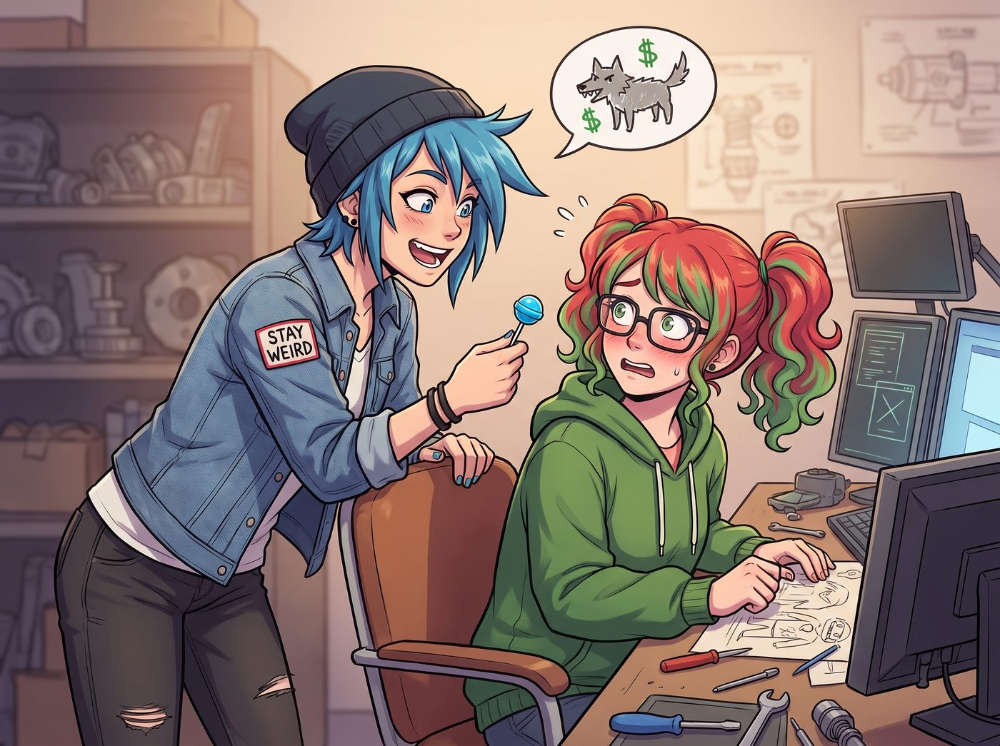
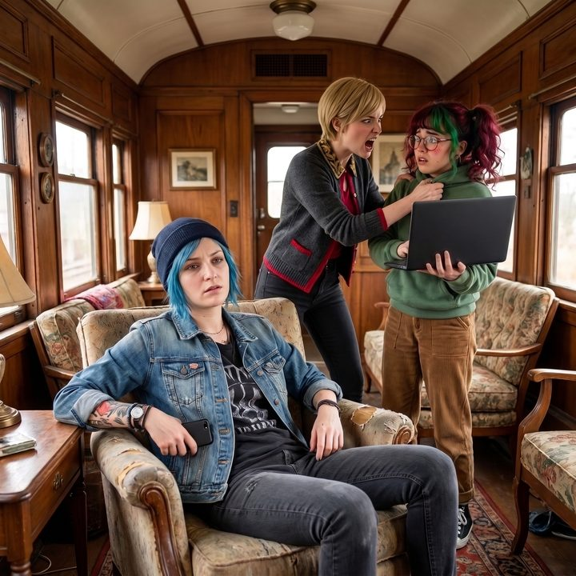

監管資訊差套利


自從上次實習生靠著幾通投訴電話和幾份合規文件，硬生生幫 Chloe 免除了一大筆交通罰單並合法敲竹槓換來一堆頂級汽車零件後，阿卡迪亞灣的街頭霸王對這位十九歲女孩的認知發生了質的飛躍。
在一個被核反應爐供得溫暖如春的下午，Chloe 終於按捺不住暴富的渴望。她反跨著一把餐椅，將一根藍莓口味的棒棒糖當成供品遞到 Lily 的工作台前，眼神裡充滿了對華爾街之狼的粗糙嚮往。
「聽著，Lily，既然妳能把聯邦法規玩得像切水果一樣簡單，妳在股市裡絕對是個開了透視外掛的怪物。」Chloe 壓低聲音，彷彿在進行什麼地下毒品交易，「教教我短炒。不用太多，告訴我幾個代碼就行。我們去放空哪個科技股？還是去炒作哪個迷因幣？我要在下個月底前買一台全新的重機。」
一、雷達般的耳朵
坐在沙發另一頭的 Victoria 依然保持著優雅的坐姿，手裡捧著一本最新期的法文版時尚雜誌。但如果 Max 此刻從側面看過去，就會發現名媛不僅把雜誌拿反了，她藏在書頁後面的右手正瘋狂地盲打解鎖手機，悄悄打開了 Chase 財團的內部股票交易終端。Victoria 的耳朵已經豎得像雷達一樣，隨時準備截胡這場內線交易。
Lily 停下敲擊鍵盤的手，溫柔地接過棒棒糖，推了推圓框眼鏡。
「Price 學姐，短線炒作和技術線型分析，本質上只是穿著戶外機能背心的金融男們所迷信的占星術。」Lily 語氣軟糯，卻帶著一種對整個華爾街降維打擊的蔑視，「在二號車廂，我們不賭博。我們只做具備絕對合規優勢的監管資訊差套利。」
「說人話，實習生。我該買什麼？」Chloe 激動地拿出手機準備下單。
二、衛星視角下的秘密
「您不需要去分析財報，Price 學姐。您只需要學會看職業安全與健康管理局和環保署的公開處罰預警庫。」
Lily 點開筆記本電腦上的一個資料夾，展示出一張用開源衛星熱成像技術截取的空拍圖：「比如這家在納斯達克上市的中型化學廢料處理公司。他們在最新的環境、社會和企業治理報告中聲稱實現了零排放。但根據我調取的衛星熱成像，他們在夜間將未經冷卻的工業廢水直接排入了華盛頓州的公共水系。」
「所以？這跟我們賺錢有什麼關係？」Chloe 依然一頭霧水。
「關係在於時間差。」Lily 露出了一個純潔無暇的微笑，「我昨天已經用匿名信箱做空了他們兩萬股的股票。別誤會，這不代表我動用了什麼驚人的本金——透過合規的融券保證金槓桿，實際只需要押上不到五千美金的自有資金，就能撬動這個部位。今天早上，我向證券交易委員會提交了一份長達五十頁的上市公司虛假陳述與財務欺詐吹哨人檢舉報告，並同步抄送給了環保署。」
三、雙殺的震撼
沙發那頭傳來「啪」的一聲，雜誌掉在了地毯上。Victoria 已經顧不上偽裝了，她直接從沙發上彈了起來，撲到 Lily 的工作台前，死死盯著螢幕上的公司代碼。
「妳……妳這是雙殺？！」名媛的聲音因為極度的金融震撼而發抖，「妳不僅能賺到股票暴跌的放空利潤，妳還能根據多德-弗蘭克法案的規定，拿到SEC處罰金的10%到30%作為吹哨人獎金？！」
「Victoria 學姐不愧是具備頂級商業素養的投資人。」Lily 欣慰地點點頭，「是的。根據這家公司去年申報的年營收，以及過往類似案例中證券交易委員會的裁罰慣例——通常落在年營收的百分之三到百分之五之間——我保守估算，這筆罰金大約會落在八百萬美元左右，而吹哨人獎金就是從這筆罰金裡抽成。我們不僅完全合法，甚至還是在為保護地球環境做貢獻。這是一場零風險、高收益的合規慈善。」
Chloe 呆滯地看著手機裡的股票交易軟體，突然覺得自己原本想跟風買幾張期權的念頭，簡直就像是拿著彈弓去參加星際大戰。她咽了一口口水，默默地把手機塞回口袋。
「Lily……妳確定妳以前真的只是個學生，而不是在五角大廈或者高盛集團策劃過顛覆第三世界國家政權的特工嗎？」
四、瘋狂的資本家與聖潔的誤解
「快！Lily！把那個股票代碼給我！我現在就要讓我的基金經理滿倉做空！」Victoria 已經徹底撕下了名媛的矜持，抓著 Lily 的肩膀瘋狂搖晃，「去他的藝術投資！這才是真正的印鈔機！我們下個月就能把整個 PNCA 買下來！」
Max 默默地舉起拍立得，將這幅街頭霸王陷入智商自卑、資本名媛徹底瘋狂的絕美畫面拍了下來。
而正在廚房裡為大家烤起司通心粉的 Kate，只聽到了保護地球環境和慈善這兩個關鍵詞。小天使端著熱騰騰的烤盤走出來，臉上洋溢著無比欣慰的聖母光輝：
「看到大家這麼熱衷於懲罰那些破壞環境的邪惡大企業，並且願意為了正義發聲，我真的好感動。上帝一定會保佑我們這場神聖的環保行動的，對吧，Lily？」
「當然，Kate 學姐。」Lily 乖巧地接過起司通心粉，「正義也許會遲到，但SEC的吹哨人獎金轉帳絕對不會。」